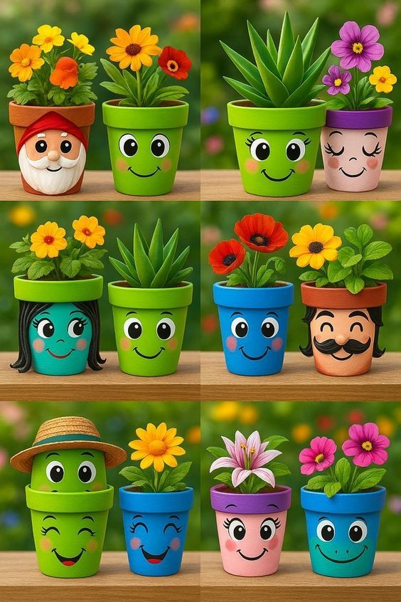
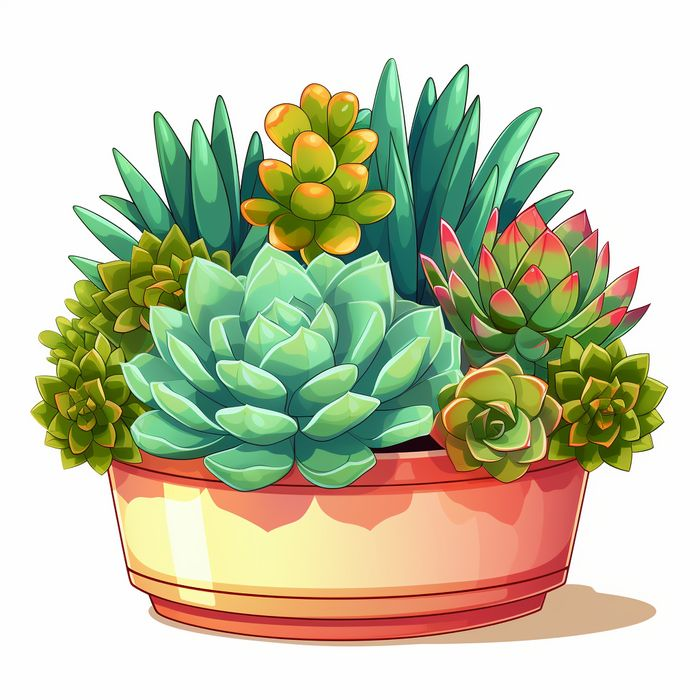
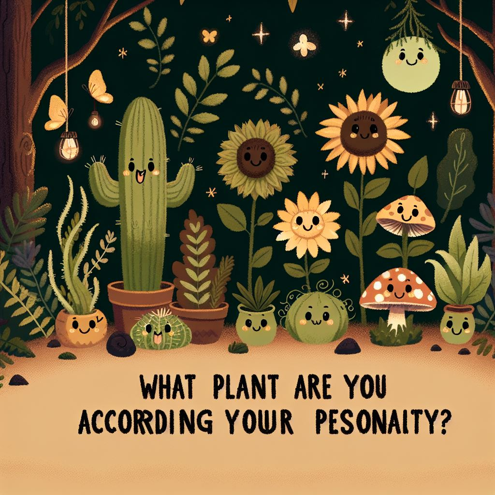
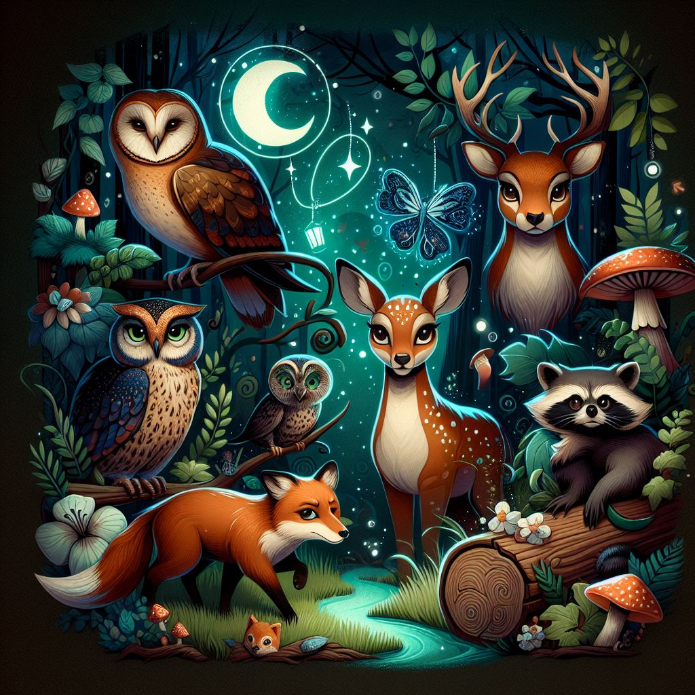
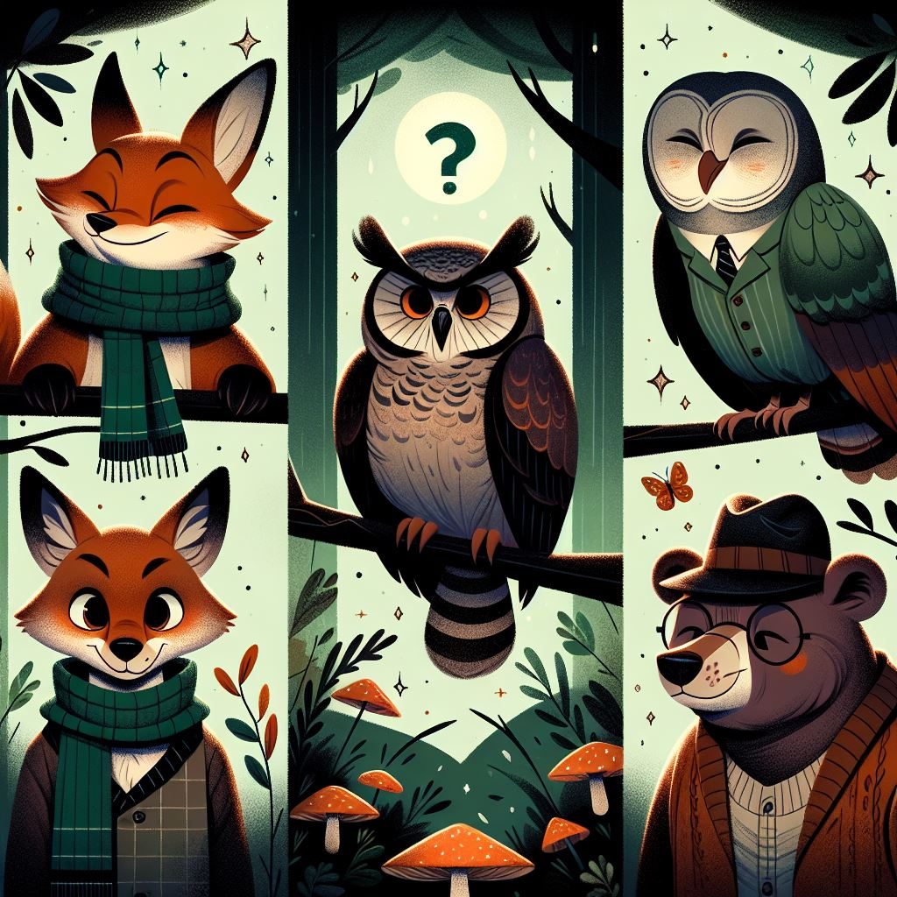
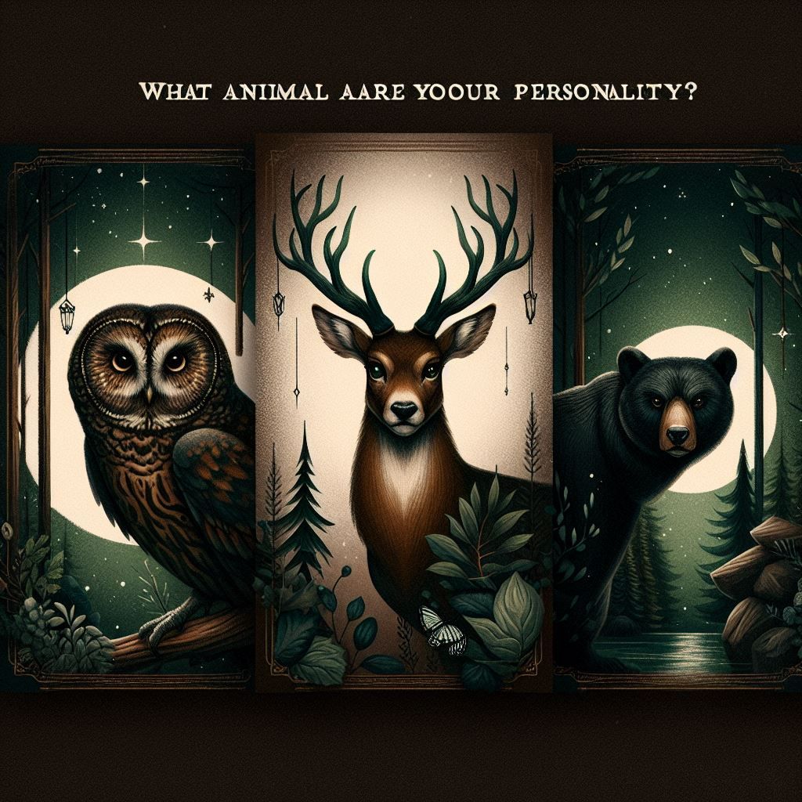

¿Qué planta refleja tu forma de pensar?

¿Qué planta representa tu forma de cuidar?

¿Qué animal representa tu personalidad social?

¿Qué animal representa tu instinto creativo?

¿Eres más planta o animal según tu energía?

¿Qué animal refleja tu manera de actuar en situaciones de estrés?
